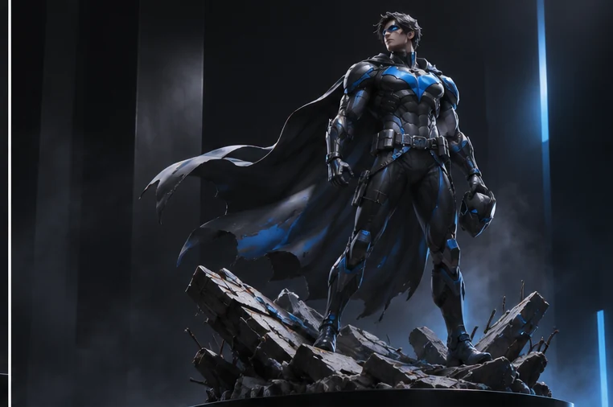

01 / 02
04 / ICON
VANGUARD.
A City Reclaimed
A study in heroic weight and negative space, built around a powerful stance and a ruined urban pedestal.
Ask about this concept ↗CONCEPT / 04
Made to be remembered.
The figure uses directional lighting to draw attention to layered armor, expressive posture and the open edge of a cape.
UNIVERSEComics
FORMATStatues
REFERENCE SCALE1:6 scale
DESIGN MATERIALResin concept
SURFACE DIRECTIONBlue-black armor aesthetic
STATUSVisual concept · not for sale
NEXTDISCOVER MORE